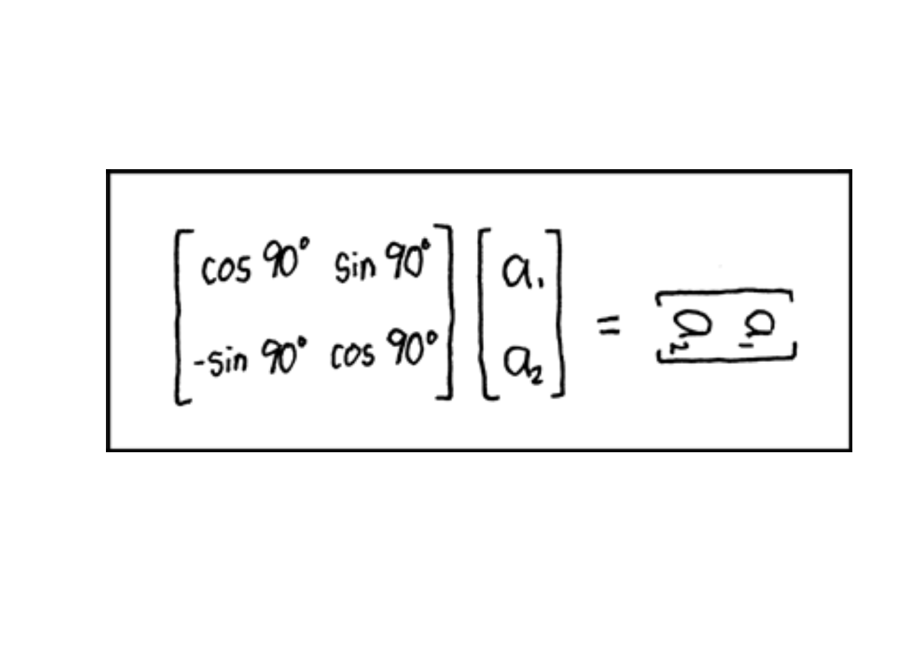
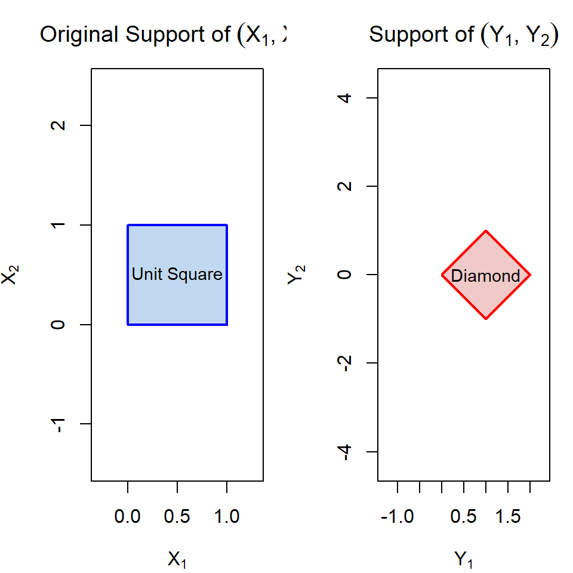

Multivariate Transformations
MA476 Mathematical Statistics — Lesson 23
Lesson 23: Multivariate Transformations
WarningA Note from LTC Turner
I’m filling in for Dr. Gidaro today. Let’s have a great class!
Cal
Reese
Objectives
- Review properties of MGFs and linear combinations of Gaussians
- Apply the MGF technique to identify distributions of sums and linear combinations
- Review the single-variable transformation technique
- Extend the transformation technique to the multivariate case using the Jacobian
- Find joint PDFs, marginals, and check independence after a transformation
Reps: Properties of MGFs & Linear Combos of Gaussians
MGF Properties
NoteTheorem: MGF of Linear Transformations
If \(X\) is a random variable with MGF \(m_X(t)\), and \(a\) and \(b\) are constants, then:
- \(m_{X+b}(t) = e^{bt} \, m_X(t)\)
- \(m_{aX}(t) = m_X(at)\)
- \(m_{aX+b}(t) = e^{bt} \, m_X(at)\)
NoteCorollary
If \(X\) is normal with \(E[X] = \mu\) and \(V(X) = \sigma^2\), then \(\frac{X - \mu}{\sigma}\) is standard normal.
Proof: The first property implies that the MGF of \(X - \mu\) is \(e^{t^2 \sigma^2 / 2}\), then the second property tells us the MGF of \((X - \mu)/\sigma\) is \(e^{t^2/2}\), which is the MGF of the standard Gaussian.
Linear Combinations of Normals
ImportantTheorem 6.3: Linear Combos of Independent Normals
Let \(Y_1, \ldots, Y_n\) be independent normally distributed random variables with \(E[Y_i] = \mu_i\) and \(V(Y_i) = \sigma_i^2\). Let \(a_1, a_2, \ldots, a_n\) be constants. If
\[U = \sum_{i=1}^{n} a_i Y_i = a_1 Y_1 + \cdots + a_n Y_n\]
then \(U\) is normally distributed with mean \(E[U] = \sum_{i=1}^{n} a_i \mu_i\) and variance \(V(U) = \sum_{i=1}^{n} a_i^2 \sigma_i^2\).
Rep: MGF Technique for Sums of Independent RVs
Say \(X_1\), \(X_2\), and \(X_3\) are independent random variables. Assume:
- \(X_1\) is exponentially distributed with \(\beta = 4\)
- \(X_2\) is Gamma distributed with \(\alpha = 3\) and \(\beta = 4\)
- \(X_3\) is Gamma distributed with \(\alpha = 5\) and \(\beta = 2\)
Part a: Find the distribution of \(Y_1 = X_1 + X_2\)
NoteHint: What do we need?
Since \(Y_1\) is a sum of independent RVs, the MGF technique is the right tool. Recall that for independent RVs, the MGF of a sum is the product of the individual MGFs:
\[m_{Y_1}(t) = m_{X_1}(t) \cdot m_{X_2}(t)\]
TipSolution a
Step 1: Write down the individual MGFs.
Recall the MGF of a Gamma\((\alpha, \beta)\) distribution is \(m_X(t) = (1 - \beta t)^{-\alpha}\).
An Exponential\((\beta)\) is just Gamma\((\alpha = 1, \beta)\), so:
- \(X_1 \sim \text{Exp}(\beta = 4)\): \(\quad m_{X_1}(t) = (1 - 4t)^{-1}\)
- \(X_2 \sim \text{Gamma}(\alpha = 3, \beta = 4)\): \(\quad m_{X_2}(t) = (1 - 4t)^{-3}\)
Step 2: Multiply the MGFs (since \(X_1\) and \(X_2\) are independent):
\[m_{Y_1}(t) = m_{X_1}(t) \cdot m_{X_2}(t) = (1 - 4t)^{-1} \cdot (1 - 4t)^{-3} = (1 - 4t)^{-4}\]
Step 3: Recognize the distribution. This has the form \((1 - \beta t)^{-\alpha}\) with \(\alpha = 4\) and \(\beta = 4\).
\[\boxed{Y_1 \sim \text{Gamma}(\alpha = 4, \beta = 4)}\]
Key insight: When you add independent Gamma RVs that share the same \(\beta\), the \(\alpha\) parameters simply add up: \(1 + 3 = 4\).
Part b: Find the distribution of \(Y_2 = 2X_3\)
NoteHint: Which MGF property?
\(Y_2 = 2X_3\) is a scalar multiple of a single RV, not a sum. Use the property:
\[m_{aX}(t) = m_X(at)\]
That is, to find the MGF of \(aX\), just replace \(t\) with \(at\) in the original MGF.
TipSolution b
Step 1: Write down the MGF of \(X_3\).
\(X_3 \sim \text{Gamma}(\alpha = 5, \beta = 2)\): \(\quad m_{X_3}(t) = (1 - 2t)^{-5}\)
Step 2: Apply the scaling property \(m_{2X_3}(t) = m_{X_3}(2t)\):
\[m_{Y_2}(t) = m_{X_3}(2t) = (1 - 2(2t))^{-5} = (1 - 4t)^{-5}\]
Step 3: Recognize the distribution. This has the form \((1 - \beta t)^{-\alpha}\) with \(\alpha = 5\) and \(\beta = 4\).
\[\boxed{Y_2 \sim \text{Gamma}(\alpha = 5, \beta = 4)}\]
Key insight: Multiplying a Gamma RV by a constant \(a\) scales \(\beta\) by \(a\): the original \(\beta = 2\) became \(2 \times 2 = 4\), while \(\alpha\) stays the same.
Part c: Find the distribution of \(Y_3 = Y_1 + Y_2\)
NoteHint: What do we already know?
We already found \(m_{Y_1}(t)\) and \(m_{Y_2}(t)\) in parts (a) and (b). And notice — they both have the same \(\beta = 4\)! Since \(Y_1\) and \(Y_2\) are independent (they’re functions of different independent RVs), we can multiply their MGFs.
TipSolution c
Step 1: Recall the MGFs from parts (a) and (b).
- \(m_{Y_1}(t) = (1 - 4t)^{-4}\)
- \(m_{Y_2}(t) = (1 - 4t)^{-5}\)
Step 2: Multiply (since \(Y_1\) and \(Y_2\) are independent — they depend on different original RVs):
\[m_{Y_3}(t) = m_{Y_1}(t) \cdot m_{Y_2}(t) = (1 - 4t)^{-4} \cdot (1 - 4t)^{-5} = (1 - 4t)^{-9}\]
Step 3: Recognize the distribution.
\[\boxed{Y_3 \sim \text{Gamma}(\alpha = 9, \beta = 4)}\]
Again, the \(\alpha\)’s add: \(4 + 5 = 9\), and \(\beta = 4\) stays the same.
Big picture: This whole problem illustrates the reproductive property of the Gamma distribution — sums of independent Gammas with the same \(\beta\) are still Gamma, and you just add the shape parameters.
Applications: Textbook Problems
Problem 6.39
NoteProblem
Consider two electronic components that operate independently, each with a life length governed by the exponential distribution with mean 1. Find the PDF for the average life length of the two components:
\[Y = \frac{X_1 + X_2}{2}\]
TipSolution
Step 1: Identify the distributions. Each \(X_i \sim \text{Exp}(\beta = 1)\), which is Gamma\((\alpha = 1, \beta = 1)\), so:
\[m_{X_i}(t) = (1 - t)^{-1}\]
Step 2: Write \(Y\) as a linear transformation and apply the scaling property. We can write \(Y = \frac{1}{2}(X_1 + X_2)\), which is \(Y = aW\) where \(a = \frac{1}{2}\) and \(W = X_1 + X_2\). By the scaling property \(m_{aW}(t) = m_W(at)\):
\[m_Y(t) = m_{\frac{1}{2}(X_1 + X_2)}(t) = m_{X_1 + X_2}\!\left(\frac{1}{2} \cdot t\right) = m_{X_1 + X_2}\!\left(\frac{t}{2}\right)\]
Step 3: Expand using independence. Since \(X_1\) and \(X_2\) are independent, \(m_{X_1+X_2}(t) = m_{X_1}(t) \cdot m_{X_2}(t)\), so:
\[m_Y(t) = m_{X_1}\!\left(\frac{t}{2}\right) \cdot m_{X_2}\!\left(\frac{t}{2}\right) = \left(1 - \frac{t}{2}\right)^{-1} \cdot \left(1 - \frac{t}{2}\right)^{-1} = \left(1 - \frac{t}{2}\right)^{-2}\]
Step 4: Recognize the distribution. This has the form \((1 - \beta t)^{-\alpha}\) with \(\alpha = 2\) and \(\beta = 1/2\).
\[\boxed{Y \sim \text{Gamma}(\alpha = 2, \beta = 1/2)}\]
Problem 6.42
NoteProblem
A type of elevator has a maximum weight capacity \(Y_1\), which is normally distributed with mean 5000 pounds and standard deviation 300 pounds. For a certain building equipped with this type of elevator, the elevator’s load \(Y_2\) is a normally distributed random variable with mean 4000 and standard deviation 400 pounds. Find the probability that the elevator will be overloaded, assuming \(Y_1\) and \(Y_2\) are independent.
TipSolution
Step 1: Set up the event. The elevator is overloaded when the load exceeds the capacity, i.e., when \(Y_2 > Y_1\), or equivalently \(Y_1 - Y_2 < 0\). So we want:
\[P(Y_1 - Y_2 < 0)\]
Step 2: Find the distribution of \(Y_1 - Y_2\). This is a linear combination \(U = a_1 Y_1 + a_2 Y_2\) with \(a_1 = 1\) and \(a_2 = -1\). By Theorem 6.3 (linear combos of independent normals), \(U = Y_1 - Y_2\) is normal with:
- Mean: \(E[U] = a_1 \mu_1 + a_2 \mu_2 = (1)(5000) + (-1)(4000) = 1000\)
- Variance: \(V(U) = a_1^2 \sigma_1^2 + a_2^2 \sigma_2^2 = (1)^2(300)^2 + (-1)^2(400)^2 = 90000 + 160000 = 250000\)
- Standard deviation: \(\sigma_U = \sqrt{250000} = 500\)
Note: even though we’re subtracting, the variances add because \((-1)^2 = 1\). Variances always add for independent RVs.
Step 3: Standardize. Convert to a standard normal:
\[Z = \frac{U - \mu_U}{\sigma_U} = \frac{(Y_1 - Y_2) - 1000}{500}\]
Step 4: Compute the probability.
\[P(Y_1 - Y_2 < 0) = P\!\left(Z < \frac{0 - 1000}{500}\right) = P(Z < -2) \approx 0.0228\]
pnorm(0, mean = 1000, sd = 500)[1] 0.02275013The probability of overloading is about 2.3%.
Review: Single-Variable Transformation Technique
ImportantThe Big Picture
Goal: Given \(X\) with known PDF \(f_X(x)\) and a transformation \(Y = h(X)\), find the PDF \(f_Y(y)\).
We have several techniques:
| Technique | Method | Best For |
|---|---|---|
| CDF Technique | Find \(F_Y(y) = P(h(X) \le y)\), rearrange/integrate, then differentiate | Versatile; works for single or multivariate |
| Transformation Technique | Find \(h^{-1}\) and its derivative: \(f_Y(y) = f_X(h^{-1}(y)) \cdot \left\lvert \frac{\partial h^{-1}}{\partial y} \right\rvert\) | Quick for monotone transformations |
| MGF Technique | Find \(m_Y(t)\) and recognize the distribution | Sums, linear combos, named distributions |
| Multivariate Transformation | Use the Jacobian (today’s new material!) | Joint PDFs of two or more transformed RVs |
Rep: Single-Variable Transformation Example
NoteExample
Say \(X\) is a random variable on \((0,1)\) with the following PDF:
\[f_X(x) = \begin{cases} 5x^4, & 0 < x < 1 \\ 0, & \text{elsewhere} \end{cases}\]
Find the PDF of \(Y = -\ln X\).
TipSolution — Transformation Technique
The formula we’re using: For a monotone transformation \(Y = h(X)\), the PDF of \(Y\) is:
\[f_Y(y) = f_X\!\left(h^{-1}(y)\right) \cdot \left|\frac{d h^{-1}}{dy}\right|\]
So we need three things: (1) the inverse function \(h^{-1}\), (2) its derivative, and (3) the new support. Let’s find each one.
Step 1: Identify \(h\) and find the inverse. We have \(Y = h(X) = -\ln X\). To find \(h^{-1}\), solve for \(X\):
\[Y = -\ln X \implies -Y = \ln X \implies X = e^{-Y}\]
So \(h^{-1}(y) = e^{-y}\).
Step 2: Compute the derivative of \(h^{-1}\).
\[\frac{d h^{-1}}{dy} = \frac{d}{dy} e^{-y} = -e^{-y}\]
Take the absolute value: \(\left|\frac{d h^{-1}}{dy}\right| = e^{-y}\).
Step 3: Determine the new support. When \(x \in (0,1)\):
- As \(x \to 0^+\): \(y = -\ln x \to +\infty\)
- As \(x \to 1^-\): \(y = -\ln 1 = 0\)
So \(y \in (0, \infty)\).
Step 4: Substitute into the transformation formula.
\[f_Y(y) = f_X(h^{-1}(y)) \cdot \left|\frac{d h^{-1}}{dy}\right|\]
\[= f_X(e^{-y}) \cdot e^{-y}\]
Now plug \(e^{-y}\) into \(f_X(x) = 5x^4\):
\[= 5(e^{-y})^4 \cdot e^{-y} = 5 e^{-4y} \cdot e^{-y} = 5e^{-5y}\]
\[\boxed{f_Y(y) = 5e^{-5y}, \quad y > 0}\]
This is \(Y \sim \text{Exp}(\beta = 1/5)\).
TipAlternate Solution — MGF Technique
Step 1: Write down the MGF definition. Since \(Y = -\ln X\):
\[m_Y(t) = E[e^{Yt}] = E[e^{(-\ln X)t}] = E[e^{-t \ln X}]\]
Step 2: Simplify the exponent. Using the property \(e^{a \ln b} = b^a\):
\[E[e^{-t \ln X}] = E[X^{-t}]\]
Step 3: Compute the expectation using the PDF of \(X\).
\[E[X^{-t}] = \int_0^1 x^{-t} \cdot 5x^4 \, dx = \int_0^1 5x^{4-t} \, dx\]
Step 4: Evaluate the integral.
\[= \frac{5 x^{5-t}}{5 - t} \bigg|_0^1 = \frac{5(1) - 5(0)}{5 - t} = \frac{5}{5 - t}\]
Step 5: Rewrite in standard MGF form. Factor out to match \((1 - \beta t)^{-1}\):
\[\frac{5}{5 - t} = \frac{1}{1 - t/5} = \left(1 - \frac{t}{5}\right)^{-1}\]
This is the MGF of an Exponential\((\beta = 1/5)\) distribution, confirming \(f_Y(y) = 5e^{-5y}\).
Where Have You Seen This Before?
Recall from multivariable calculus — polar coordinates:
\[x = r\cos\theta, \qquad y = r\sin\theta\]
The Jacobian is:
\[\frac{\partial(x,y)}{\partial(r,\theta)} = \begin{bmatrix} \cos\theta & -r\sin\theta \\ \sin\theta & r\cos\theta \end{bmatrix}\]
\[\det(J) = r\cos^2\theta + r\sin^2\theta = r(\cos^2\theta + \sin^2\theta) = r\]
So \(dx\,dy = r\,dr\,d\theta\). The Jacobian is the same idea — it tells us how areas scale under a transformation.
New Material: The Multivariate Transformation Technique
Single Variable → Multivariate: Side by Side
The multivariate technique is the same idea as the single-variable case — just extended to two dimensions. Compare them side by side:
NoteSingle Variable (Review)
Setup: \(Y = h(X)\), monotone transformation.
Formula:
\[f_Y(y) = f_X\!\left(h^{-1}(y)\right) \cdot \left|\frac{d h^{-1}}{dy}\right|\]
What you need:
- One inverse function: solve \(Y = h(X)\) for \(X\)
- One derivative: \(\frac{d h^{-1}}{dy}\)
- The absolute value corrects for whether \(h\) is increasing or decreasing
ImportantMultivariate (New!)
Setup: \(Y_1 = h_1(X_1, X_2)\) and \(Y_2 = h_2(X_1, X_2)\), one-to-one.
Formula:
\[f_{Y_1, Y_2}(y_1, y_2) = f_{X_1, X_2}(h_1^{-1}, h_2^{-1}) \cdot |\det(J)|\]
What you need:
- Two inverse functions: solve the system for \(X_1\) and \(X_2\)
- Four partial derivatives (the 2×2 Jacobian replaces the single derivative)
- The absolute determinant corrects for how areas scale
The pattern is the same: original PDF evaluated at the inverse \(\times\) absolute value of how the transformation stretches space. In 1D that’s a single derivative; in 2D it’s a determinant of partial derivatives.
The Jacobian in Detail
ImportantThe Jacobian Matrix and Its Determinant
The Jacobian matrix collects all four partial derivatives of the inverse functions:
\[J = \begin{bmatrix} \dfrac{\partial h_1^{-1}}{\partial y_1} & \dfrac{\partial h_1^{-1}}{\partial y_2} \\[1em] \dfrac{\partial h_2^{-1}}{\partial y_1} & \dfrac{\partial h_2^{-1}}{\partial y_2} \end{bmatrix}\]
Its absolute determinant is:
\[|\det(J)| = \left| \frac{\partial h_1^{-1}}{\partial y_1} \frac{\partial h_2^{-1}}{\partial y_2} - \frac{\partial h_1^{-1}}{\partial y_2} \frac{\partial h_2^{-1}}{\partial y_1} \right|\]
This plays the same role as \(\left|\frac{dh^{-1}}{dy}\right|\) in the single-variable case — it measures how much the transformation stretches or compresses area at each point.
WarningThe Recipe
- Write down the joint PDF \(f_{X_1, X_2}(x_1, x_2)\)
- Find the inverse functions \(x_1 = h_1^{-1}(y_1, y_2)\) and \(x_2 = h_2^{-1}(y_1, y_2)\)
- Compute all four partial derivatives to build the Jacobian matrix
- Take the absolute determinant \(|\det(J)|\)
- Substitute into the formula: \(f_{Y_1,Y_2} = f_{X_1,X_2}(h_1^{-1}, h_2^{-1}) \cdot |\det(J)|\)
- Determine the new support (the region where \(f_{Y_1,Y_2} > 0\))
Rep: Exponential Transformation
NoteProblem
Let \(X_1\) and \(X_2\) be i.i.d. exponentially distributed random variables with parameter/mean \(\beta = 4\). Let \(Y_1 = \frac{X_1}{X_1 + X_2}\) and \(Y_2 = X_1 + X_2\).
- Find the joint PDF \(f_{Y_1, Y_2}(y_1, y_2)\)
- Use the joint PDF to find the marginals \(f_{Y_1}\) and \(f_{Y_2}\)
- Are the marginals distributions we know?
- Are \(Y_1\) and \(Y_2\) independent?
TipSolution a: Joint PDF
Step 1: Write down the joint PDF. Each \(X_i \sim \text{Exp}(\beta = 4)\) has PDF \(f_{X_i}(x_i) = \frac{1}{4} e^{-x_i/4}\) for \(x_i \ge 0\). Since they’re independent:
\[f_{X_1, X_2}(x_1, x_2) = \frac{1}{4} e^{-x_1/4} \cdot \frac{1}{4} e^{-x_2/4} = \frac{1}{16} e^{-(x_1 + x_2)/4}, \quad x_1 \ge 0, \; x_2 \ge 0\]
Step 2: Find the inverse functions. Solve \(Y_1 = \frac{X_1}{X_1 + X_2}\) and \(Y_2 = X_1 + X_2\) for \(X_1\) and \(X_2\):
- From the second equation: \(X_1 + X_2 = Y_2\)
- Substitute into the first: \(Y_1 = \frac{X_1}{Y_2} \implies X_1 = Y_1 Y_2\)
- Then: \(X_2 = Y_2 - X_1 = Y_2 - Y_1 Y_2 = Y_2(1 - Y_1)\)
So: \(h_1^{-1} = y_1 y_2\) and \(h_2^{-1} = y_2(1 - y_1)\).
Step 3: Compute all four partial derivatives.
\[\frac{\partial h_1^{-1}}{\partial y_1} = \frac{\partial}{\partial y_1}(y_1 y_2) = y_2, \qquad \frac{\partial h_1^{-1}}{\partial y_2} = \frac{\partial}{\partial y_2}(y_1 y_2) = y_1\]
\[\frac{\partial h_2^{-1}}{\partial y_1} = \frac{\partial}{\partial y_1}[y_2(1 - y_1)] = -y_2, \qquad \frac{\partial h_2^{-1}}{\partial y_2} = \frac{\partial}{\partial y_2}[y_2(1 - y_1)] = 1 - y_1\]
\[J = \begin{bmatrix} y_2 & y_1 \\ -y_2 & 1 - y_1 \end{bmatrix}\]
Step 4: Compute the absolute determinant.
\[\det(|J|) = |y_2(1 - y_1) - (y_1)(-y_2)| = |y_2 - y_1 y_2 + y_1 y_2| = |y_2| = y_2\]
(Since \(y_2 \ge 0\), the absolute value is just \(y_2\).)
Step 5: Substitute into the formula. Replace \(x_1\) with \(y_1 y_2\) and \(x_2\) with \(y_2(1-y_1)\):
\[f_{Y_1, Y_2}(y_1, y_2) = f_{X_1, X_2}(y_1 y_2, \; y_2(1-y_1)) \cdot y_2\]
\[= \frac{1}{16} e^{-(y_1 y_2 + y_2(1-y_1))/4} \cdot y_2\]
Step 6: Simplify the exponent. The key simplification:
\[y_1 y_2 + y_2(1 - y_1) = y_1 y_2 + y_2 - y_1 y_2 = y_2\]
The \(y_1\) terms cancel! So:
\[\boxed{f_{Y_1, Y_2}(y_1, y_2) = \frac{y_2 \, e^{-y_2/4}}{16}}\]
Step 7: Determine the support. Since \(X_1 \ge 0\) and \(X_2 \ge 0\):
- \(Y_2 = X_1 + X_2 \ge 0\), so \(Y_2 \in [0, \infty)\)
- \(Y_1 = \frac{X_1}{X_1 + X_2}\) is a ratio of non-negative numbers with \(X_1 \le X_1 + X_2\), so \(Y_1 \in [0, 1]\)
Notice something important: the joint PDF does not depend on \(y_1\). This is a strong hint that \(Y_1\) and \(Y_2\) will turn out to be independent.
TipSolution b: Marginal PDFs
Marginal for \(f_{Y_1}\): To get the marginal, integrate out \(y_2\) over its full range:
\[f_{Y_1}(y_1) = \int_0^{\infty} \frac{y_2 \, e^{-y_2/4}}{16} \, dy_2\]
Since the integrand doesn’t depend on \(y_1\), we can factor the constants:
\[= \frac{1}{16} \int_0^{\infty} y_2 \, e^{-y_2/4} \, dy_2\]
This integral is \(E[W]\) where \(W \sim \text{Exp}(\beta = 4)\)… but let’s just compute it directly using integration by parts (or the Gamma integral formula \(\int_0^\infty y^n e^{-y/\beta} dy = n! \cdot \beta^{n+1}\) for \(n = 1\)):
\[\int_0^{\infty} y_2 \, e^{-y_2/4} \, dy_2 = 1! \cdot 4^2 = 16\]
So:
\[f_{Y_1}(y_1) = \frac{1}{16} \cdot 16 = 1, \quad 0 \le y_1 \le 1\]
\[\boxed{Y_1 \sim \text{Unif}(0, 1)}\]
Marginal for \(f_{Y_2}\): Integrate out \(y_1\) over its range \([0, 1]\):
\[f_{Y_2}(y_2) = \int_0^{1} \frac{y_2 \, e^{-y_2/4}}{16} \, dy_1\]
Since the integrand doesn’t depend on \(y_1\), this integral is trivial:
\[= \frac{y_2 \, e^{-y_2/4}}{16} \int_0^1 dy_1 = \frac{y_2 \, e^{-y_2/4}}{16} \cdot 1 = \frac{y_2 \, e^{-y_2/4}}{16}, \quad y_2 \ge 0\]
Compare this to the Gamma PDF: \(f(y) = \frac{1}{\beta^\alpha \Gamma(\alpha)} y^{\alpha-1} e^{-y/\beta}\). With \(\alpha = 2\) and \(\beta = 4\):
\[f(y) = \frac{1}{4^2 \cdot \Gamma(2)} y^{2-1} e^{-y/4} = \frac{1}{16 \cdot 1} y \, e^{-y/4} = \frac{y \, e^{-y/4}}{16} \; \checkmark\]
\[\boxed{Y_2 \sim \text{Gamma}(\alpha = 2, \beta = 4)}\]
TipSolution c & d: Named Distributions and Independence
c. Yes!
- \(Y_1 \sim \text{Unif}(0,1)\)
- \(Y_2 \sim \text{Gamma}(\alpha = 2, \beta = 4)\)
d. Check: \(f_{Y_1, Y_2}(y_1, y_2) = f_{Y_1}(y_1) \cdot f_{Y_2}(y_2)\)?
\[f_{Y_1}(y_1) \cdot f_{Y_2}(y_2) = 1 \cdot \frac{y_2 \, e^{-y_2/4}}{16} = \frac{y_2 \, e^{-y_2/4}}{16} = f_{Y_1, Y_2}(y_1, y_2) \; \checkmark\]
Yes, \(Y_1\) and \(Y_2\) are independent!
This is a remarkable result: the ratio \(\frac{X_1}{X_1 + X_2}\) is independent of the sum \(X_1 + X_2\).
Rep: Standard Normal Transformation
NoteProblem
Let \(X_1\) and \(X_2\) be i.i.d. standard normal random variables (\(\mu = 0\), \(\sigma^2 = 1\)). Let \(Y_1 = X_1\) and \(Y_2 = X_1 + X_2\).
- Find the joint PDF \(f_{Y_1, Y_2}(y_1, y_2)\)
- Find \(\text{Cov}(Y_1, Y_2)\) and determine whether they are independent
TipSolution a: Joint PDF
Step 1: Write down the joint PDF. Each \(X_i \sim N(0,1)\) has PDF \(f_{X_i}(x_i) = \frac{1}{\sqrt{2\pi}} e^{-x_i^2/2}\). Since they’re independent:
\[f_{X_1, X_2}(x_1, x_2) = \frac{1}{\sqrt{2\pi}} e^{-x_1^2/2} \cdot \frac{1}{\sqrt{2\pi}} e^{-x_2^2/2} = \frac{1}{2\pi} e^{-(x_1^2 + x_2^2)/2}\]
Step 2: Find the inverse functions. Solve \(Y_1 = X_1\) and \(Y_2 = X_1 + X_2\) for \(X_1\) and \(X_2\):
- From the first equation: \(X_1 = Y_1\)
- Substitute into the second: \(Y_2 = Y_1 + X_2 \implies X_2 = Y_2 - Y_1\)
So: \(h_1^{-1} = y_1\) and \(h_2^{-1} = y_2 - y_1\).
Step 3: Compute all four partial derivatives.
\[\frac{\partial h_1^{-1}}{\partial y_1} = 1, \qquad \frac{\partial h_1^{-1}}{\partial y_2} = 0\]
\[\frac{\partial h_2^{-1}}{\partial y_1} = -1, \qquad \frac{\partial h_2^{-1}}{\partial y_2} = 1\]
\[J = \begin{bmatrix} 1 & 0 \\ -1 & 1 \end{bmatrix}\]
Step 4: Compute the absolute determinant.
\[|\det(J)| = |(1)(1) - (0)(-1)| = |1| = 1\]
Step 5: Substitute into the formula. Replace \(x_1\) with \(y_1\) and \(x_2\) with \(y_2 - y_1\):
\[f_{Y_1, Y_2}(y_1, y_2) = \frac{1}{2\pi} e^{-(y_1^2 + (y_2 - y_1)^2)/2} \cdot 1\]
Step 6: Expand and simplify the exponent.
\[y_1^2 + (y_2 - y_1)^2 = y_1^2 + y_2^2 - 2y_1 y_2 + y_1^2 = 2y_1^2 - 2y_1 y_2 + y_2^2\]
\[\boxed{f_{Y_1, Y_2}(y_1, y_2) = \frac{1}{2\pi} e^{-(2y_1^2 - 2y_1 y_2 + y_2^2)/2}}\]
for \(-\infty < y_1 < \infty\) and \(-\infty < y_2 < \infty\).
TipSolution b: Covariance and Independence
Covariance: Since \(Y_1 = X_1\) and \(Y_2 = X_1 + X_2\), with \(X_1, X_2\) independent:
\[\text{Cov}(Y_1, Y_2) = \text{Cov}(X_1, X_1 + X_2)\]
Expand using the bilinearity of covariance:
\[= \text{Cov}(X_1, X_1) + \text{Cov}(X_1, X_2)\]
Since \(X_1\) and \(X_2\) are independent, \(\text{Cov}(X_1, X_2) = 0\), and \(\text{Cov}(X_1, X_1) = \text{Var}(X_1) = 1\):
\[\boxed{\text{Cov}(Y_1, Y_2) = 1}\]
Independence: Since \(\text{Cov}(Y_1, Y_2) = 1 \neq 0\), the variables are not independent.
We can also see this from the joint PDF: the exponent \(2y_1^2 - 2y_1 y_2 + y_2^2\) contains a cross-term \(-2y_1 y_2\), so the joint PDF does not factor into \(f_{Y_1}(y_1) \cdot f_{Y_2}(y_2)\).
Contrast with the Exponential example: There, the joint PDF had no \(y_1\) dependence at all, so it factored easily. Here, \(Y_1\) and \(Y_2\) share the random variable \(X_1\), creating dependence.
Summary: Transformation Techniques
ImportantWhich Technique Should I Use?
| Technique | Formula | Best For | Work Level |
|---|---|---|---|
| CDF | \(F_Y(y) = P(h(X) \le y)\) → integrate → differentiate | Versatile, any transformation | High |
| Transformation | \(f_Y(y) = f_X(h^{-1}(y)) \cdot \left\lvert \frac{\partial h^{-1}}{\partial y} \right\rvert\) | Monotone single-variable | Low |
| MGF | Find \(m_Y(t)\), recognize the distribution | Sums, linear combos, named distributions | Low–Med |
| Multivariate Transformation | \(f_{Y_1,Y_2} = f_{X_1,X_2}(h_1^{-1}, h_2^{-1}) \cdot \lvert\det(J)\rvert\) | Joint PDFs | Medium |
Example: Uniform Transformation
NoteProblem
Let \(X_1\) and \(X_2\) be i.i.d. Uniform\((0,1)\) random variables. Let \(Y_1 = X_1 + X_2\) and \(Y_2 = X_1 - X_2\).
Find the joint PDF \(f_{Y_1, Y_2}(y_1, y_2)\) and determine the support.
TipSolution
Step 1: Write down the joint PDF. Each \(X_i \sim \text{Unif}(0,1)\) has PDF \(f_{X_i}(x_i) = 1\) for \(0 < x_i < 1\). Since they’re independent:
\[f_{X_1, X_2}(x_1, x_2) = 1, \quad 0 < x_1 < 1, \; 0 < x_2 < 1\]
Step 2: Find the inverse functions. Solve \(Y_1 = X_1 + X_2\) and \(Y_2 = X_1 - X_2\) for \(X_1\) and \(X_2\):
- Add the two equations: \(Y_1 + Y_2 = 2X_1 \implies X_1 = \frac{Y_1 + Y_2}{2}\)
- Subtract: \(Y_1 - Y_2 = 2X_2 \implies X_2 = \frac{Y_1 - Y_2}{2}\)
So: \(h_1^{-1} = \frac{y_1 + y_2}{2}\) and \(h_2^{-1} = \frac{y_1 - y_2}{2}\).
Step 3: Compute all four partial derivatives.
\[\frac{\partial h_1^{-1}}{\partial y_1} = \frac{1}{2}, \qquad \frac{\partial h_1^{-1}}{\partial y_2} = \frac{1}{2}\]
\[\frac{\partial h_2^{-1}}{\partial y_1} = \frac{1}{2}, \qquad \frac{\partial h_2^{-1}}{\partial y_2} = -\frac{1}{2}\]
\[J = \begin{bmatrix} 1/2 & 1/2 \\ 1/2 & -1/2 \end{bmatrix}\]
Step 4: Compute the absolute determinant.
\[|\det(J)| = \left|\frac{1}{2} \cdot \left(-\frac{1}{2}\right) - \frac{1}{2} \cdot \frac{1}{2}\right| = \left|-\frac{1}{4} - \frac{1}{4}\right| = \left|-\frac{1}{2}\right| = \frac{1}{2}\]
Step 5: Substitute into the formula. Since \(f_{X_1,X_2} = 1\) on its support:
\[f_{Y_1, Y_2}(y_1, y_2) = 1 \cdot \frac{1}{2} = \frac{1}{2}\]
Step 6: Determine the support. The original constraints are \(0 < x_1 < 1\) and \(0 < x_2 < 1\). Substituting the inverse functions:
| Original Constraint | In Terms of \((y_1, y_2)\) |
|---|---|
| \(x_1 > 0\) | \(y_1 + y_2 > 0\) |
| \(x_1 < 1\) | \(y_1 + y_2 < 2\) |
| \(x_2 > 0\) | \(y_1 - y_2 > 0\) |
| \(x_2 < 1\) | \(y_1 - y_2 < 2\) |
These four inequalities define a diamond (rotated square) in the \((y_1, y_2)\)-plane:
\[\boxed{f_{Y_1, Y_2}(y_1, y_2) = \frac{1}{2}, \quad \text{on the diamond defined by } 0 < y_1 + y_2 < 2 \text{ and } 0 < y_1 - y_2 < 2}\]
Code
# Visualize the support mapping
par(mfrow = c(1, 2), mar = c(4, 4, 3, 1))
# Original support: unit square
plot(NULL, xlim = c(-0.3, 1.3), ylim = c(-0.3, 1.3),
xlab = bquote(X[1]), ylab = bquote(X[2]),
main = bquote("Original Support of" ~ (X[1] * "," ~ X[2])),
asp = 1)
polygon(c(0, 1, 1, 0), c(0, 0, 1, 1), col = rgb(0.2, 0.5, 0.8, 0.3), border = "blue", lwd = 2)
text(0.5, 0.5, "Unit Square", cex = 0.9)
# Transformed support: diamond
plot(NULL, xlim = c(-1.3, 2.3), ylim = c(-1.3, 1.3),
xlab = bquote(Y[1]), ylab = bquote(Y[2]),
main = bquote("Support of" ~ (Y[1] * "," ~ Y[2])),
asp = 1)
polygon(c(0, 1, 2, 1), c(0, 1, 0, -1), col = rgb(0.8, 0.3, 0.3, 0.3), border = "red", lwd = 2)
text(1, 0, "Diamond", cex = 0.9)
Before You Leave
Today
- MGF technique identifies distributions of sums and linear combos by recognizing known MGFs
- Single-variable transformation uses \(f_Y(y) = f_X(h^{-1}(y)) \cdot |dh^{-1}/dy|\)
- Multivariate transformation extends this using the Jacobian determinant
- After finding a joint PDF, you can find marginals by integrating and check independence by seeing if the joint factors
Key Takeaway
The multivariate transformation technique is really the same idea as the single-variable case — you just need to track two inverse functions and use a 2x2 Jacobian instead of a single derivative.